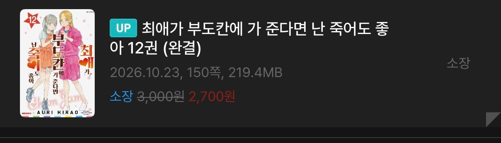

마지막권을 조지는 게 명작의 조건이라고???

마지막권을 조지는 게 명작의 조건이라고???
그래서 결말이 어떤지 설명을 해줘야 할꺼 아니냐
그건 말이지
돔 공연 축하해.
이거 그림 진짜 예쁨
결말이 어떻게 된지 써두든가 해야 알지
대충 스토리가 뭐고 설정이뭔데 이러게 되었다 정도는 써야지 이건뭐 씹덕들 특이냐
최애의 아이 보다 더한 엔딩이 있을리가 ...
1줄 적는게 존나게 어렵긴한가보네
아오 씹덕들 또 지들만 아는 얘기 커뮤에 덜렁올리네
니네 갤에 쓰라고 아님 설명이라도 적든가
않이 내용은 알려줘야할거아니에요;;
뭔진 알려줘야 이해를 하던가하지
완결 제외해도 명작은 커녕 수작 아니던가
부도칸 가고 끝남?